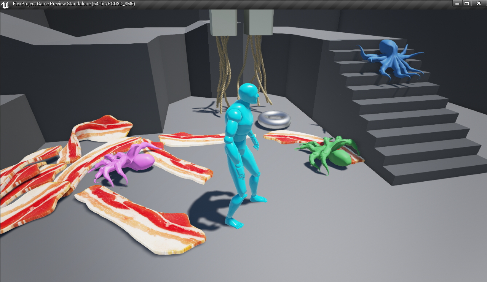
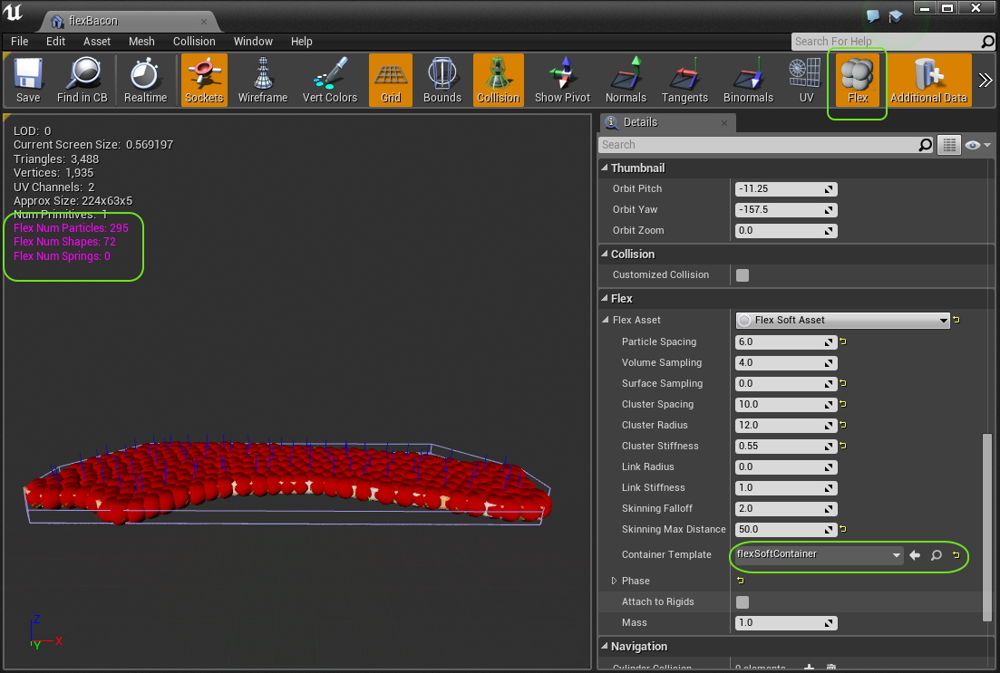
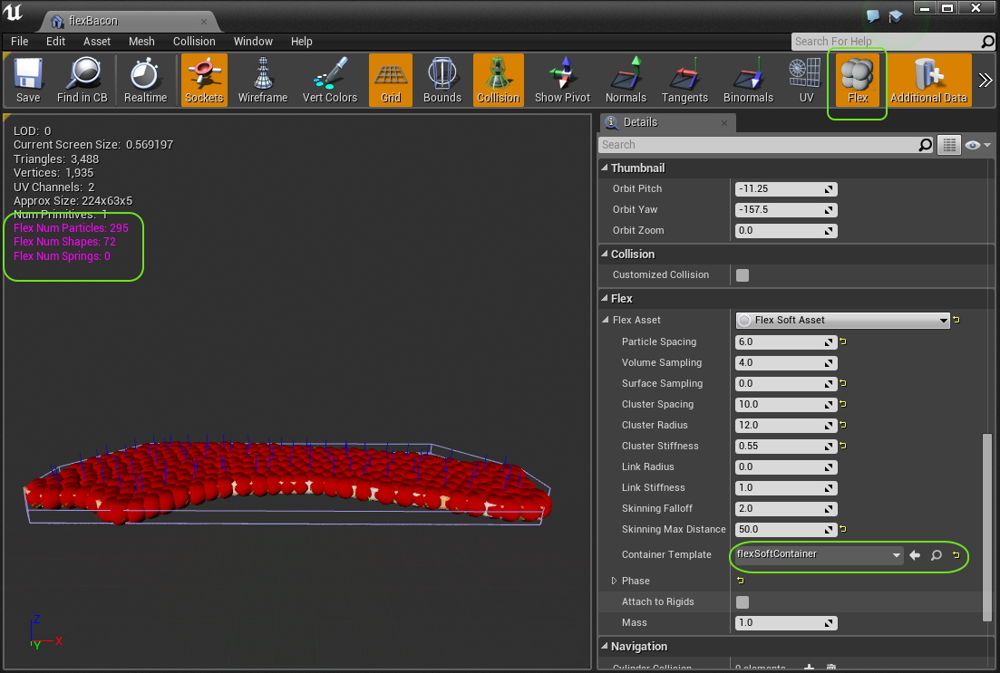
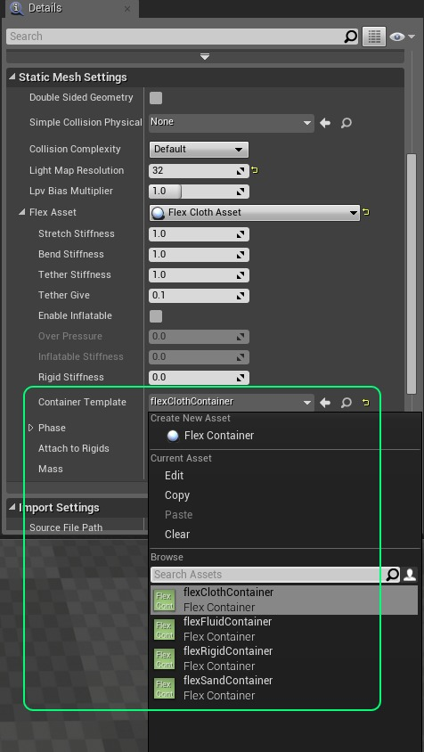

Assets¶
The Flex UE4 integration adds a new property to the StaticMesh asset which allows you to turn the mesh into a simulated asset directly. When you click on the FlexAsset property a drop-down will appear that lets you choose between three different asset types:
Soft Bodies¶
{kind=link}
Flex soft bodies are created by sampling a Static Mesh with particles, generating shape-matching clusters, and optional direct links between near by particles.
Flex soft bodies work by sampling the interior (and optionally) the surface of the mesh with points. These points are then clustered into particles, which are then clustered into “shape matching groups”. Each cluster adds a constraint to the solver, and the clusters are used to drive regular linear blend skinning.
Clusters behave in way that is similiar to bones in a regular animated skeleton - however they are not hierarchical, and are driven instead by the deformation of their attached particles. The clusters and skin weights are generated automatically, so there is no need to manually skin the mesh in a DCC tool.
To create a soft body add a Flex Soft Asset to the Static Mesh.
Once you have created the Soft Asset and assigned a container, the particle sampling and clustering will be automatically generated and updated whenever you modify a property. If you enable the Flex visualization you will be able to see the particles (in red), the clusters (and RGB basis), and a count of each in the upper left hand corner:
 

{kind=link}
Flex Soft Asset¶
- Particle Spacing The spacing to use when creating particles, this should generally be the same or less than the container radius. It should be set so that there is some overlap between neighboring particles, as this will help make collision detection robust.
- Volume Sampling Control the resolution the mesh is voxelized at in order to generate interior sampling. Note that this does not increase the number of particles, but it controls where particles will be placed. The volume sampling resolution needs to be high enough to capture all the features where particles should be located. If the mesh is not closed then this should be set to zero and surface sampling should be used instead (see below).
- Surface Sampling Controls how many samples are taken of the mesh surface, again this does not directly control the number of particles, but rather it affects where they are placed. For meshes which are one-sided, or not closed the surface sampling can be used to ensure all parts of the surface have a particle covering them.
- Cluster Spacing The spacing for shape-matching clusters, should be at least the particle spacing.
- Cluster Radius Controls the overall size of the clusters, this controls how much overlap the clusters have which affects how smooth the final deformation is, if parts of the body are detaching then it means the clusters are not overlapping sufficiently to form a fully connected set of clusters.
- Cluster Stiffness Controls the stiffness of the resulting clusters.
- Link Radius Any particles below this distance will have additional distance constraints created between them.
- Link Stiffness The stiffness of distance links.
- Skinning Falloff Skinning weights for the mesh vertices will be generated with the falloff inversely with distance to cluster according to this parameter.
- Skinning Max Distance Any clusters greater than this distance from a particle won’t contribute to the skinning.
- Container Template The Flex container to use for simulation of this asset.
- Phase The phase that is used for all particles belonging to this asset. Self-collision can be enabled here, but note that if particles in the rest shape of the cloth are closer together than the radius on the container then it may cause artifacts in the cloth as the distance constraints fight the collision. The best way to set up cloth for self-collision is to ensure all the length of all the edges in the mesh are consistently close to the radius on the container.
- Attach To Rigids If enabled the particles will check to see if they overlap any shapes in the level when they are spawned. Any overlaps will create an attachment between the particle and the shape. This allows for example attaching some particles in the Flex cloth to an actor that is simulated with PhysX. This can be useful for example to create streamers, or cloth ‘accessories’ for a rigid body actor.
- Mass The mass of each particle in the shape. This property can be used to configure how different Flex actors interact with each other on collision. Actors with higher masses have a larger impact on the motion of actors with lower masses than vice versa.
Cloth¶
{kind=link}
In addition to the soft body asset there is a simple cloth asset type that can be used to add dynamics to meshes. The Flex Cloth Asset will create one particle per-graphics vertex, so the artist has direct control over where particles are placed. Distance constraints are placed along edges of the mesh to model stretching and bending. This type of asset is generally more efficent to simulate than a full soft-body assset, it is often the best choice for environmental cloth such as leaves, feathers, flags, banners etc.
Note: because there is a one to one correspondence between particles and vertices this type of asset is best suited for single-sided meshes, i.e.: ones without thickness
Click the Container Template drop down to bring up the asset browser and assign a FlexContainer to the asset:
You will now see the Flex particles visualized in the Static Mesh editor window, each particle is drawn with the radius specified on the container (ensure that the Flex visualization button is enabled):

Flex Cloth Asset¶
- Stretch Stiffness Controls the overall resistance to stretching of the cloth. Specifically for the distance constraints created along edges of the triangle mesh.
- Bend Stiffness Controls the overall resistance to bending of the cloth, bending is handled in Flex by placing edge constraints across edges between adjacent triangles. This limits bending between the two faces.
- Tether Stiffness Tether constraints are special types of constraints that resist stretching very strongly. They will only be created when the cloth has some fixed particles, with an inverse mass of zero. If you have hanging cloth then paint the fixed vertices to black (this will give them infinite mass), and set the tether stiffness to 0.5-1.0 to greatly reduce stretching even at low iteration counts.
- Tether Give Because the tether constraints are so effective at resisting stretching they cause the cloth to appear too stiff. Allowing a small fraction of give will allow the cloth to still move freely. The tether constraints will not become active unless the cloth has stretched beyond this value past the rest-length.
- Enable Inflatable If enabled, then an additional volume constraint will be created for the body which tries to preserve the rest volume of the shape. This creates an “Inflatable” type object which can be inflated or deflated, for good results the mesh should be closed.
- Over Pressure Controls the proportion of the rest volume the simulation is trying to maintain. For values < 1.0, the object will appear deflated, for values > 1.0 the object will appear to be over-inflated. Note that the level of inflation is also somewhat dependent on the iteration count in the container. To have very “stiff”, or highly-over inflated objects may require more solver iterations.
- Tearing Enabled If true then cloth can be torn. This will break constraints and create new particles in response to stretching along triangle edges.
- Tearing Max Strain The maximum edge strain before a tearing even occurs, a value of 2.0 means the edge can be stretched to twice its rest length before breaking
- Tearing Max Break Rate The maximum number of edges to break in a single simulation step. Larger values mean cloth will tear faster and appear more like a fracture event. Lower values will limit tearing and appear as slower progressive breaking.
- Tearing Vertex Alpha When vertices are torn their vertex color alpha channel will be set to this value, this can be used to mix in a torn cloth texture mask for example.
- Rigid Stiffness When this is set >0.0 the cloth will also have a rigid shape-matching constraint added to it. This makes the cloth behave like a mixture between rigid and deformable and can be really useful for creating cloth that strongly resists bending.
- Container Template The Flex container to use for simulation of this asset.
- Phase The phase that is used for all particles belonging to this asset. Self-collision can be enabled here, but note that if particles in the rest shape of the cloth are closer together than the radius on the container then it may cause artifacts in the cloth as the distance constraints fight the collision. The best way to set up cloth for self-collision is to ensure all the length of all the edges in the mesh are consistently close to the radius on the container.
- Attach To Rigids If enabled the particles will check to see if they overlap any shapes in the level when they are spawned. Any overlaps will create an attachment between the particle and the shape. This allows for example attaching some particles in the Flex cloth to an actor that is simulated with PhysX. This can be useful for example to create streamers, or cloth ‘accessories’ for a rigid body actor.
- Mass The mass of each particle in the shape. This property can be used to configure how different Flex actors interact with each other on collision. Actors with higher masses have a larger impact on the motion of actors with lower masses than vice versa.
Rigids¶
To create a Flex rigid body from a Static Mesh, add a Flex Solid Asset to the Static Mesh:

Flex Solid Asset¶
- Sampling Distance Determines the distance that particles are spaced when sampling the mesh. For a rectangular box that is 100 units wide, 100 units tall, and 50 units tall, the default value of 10 would create a sampling of 10x10x5 particles (500 in total). The more particles a shape has in Flex the slower “convergence” will be, this means that shapes with a large number of particles will require many iterations on the container to appear “stiff” and not bouncy. A good rule of thumb is that a shape should not have more than ~64 particles in total. Note also that the sampling distance has an effect on collision detection, if particles are too sparsely sampled then some interpenetration may occur. To avoid this, the sampling distance should be set < the radius on the containers this object is used with.
- Stiffness The stiffness parameter for the shape-matching constraint. For solid assets this should typically be set to 1.0.
- Container Template The Flex container to use for simulation of this asset.
- Phase The phase that is used for all particles belonging to this asset. Self-collision should generally be disabled for rigid bodies.
- Attach To Rigids If enabled the particles will check to see if they overlap any shapes in the level when they are spawned. Any overlaps will create an attachment between the particle and the shape. This allows for example attaching some particles in the Flex solid to an actor that is static or simulated with PhysX. This can be useful for example to create a hinge like mechanism. Be careful when embedding Flex particles inside rigid actors though, if the surrounding particles are half-intersecting the actor collision geometry they will probably collide badly.
- Mass The mass of each particle in the shape. This property can be used to configure how different Flex actors interact with each other on collision. Actors with higher masses have a larger impact on the motion of actors with lower masses than vice versa. Sometimes rigid bodies in Flex can behave “squishy”, even when the stiffness is set to 1.0. Our real-world intuition tells us that heavier objects are stiffer, e.g.: a boulder versus a piece of sponge. However, in physics engines, the mass will typically not affect how stiff the object appears, the way to make objects appear harder in Flex is to increase the number of constraint iterations on the container.